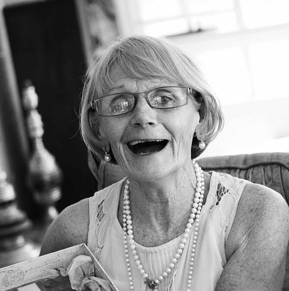

Welcome to Pat's Salmon Cookies!
Welcome to Pat's Salmon Cookies! Our History
Our History
Pat's Salmon Cookies was established in 1911 by grandma Rutherford. Granny always knew how to make the best cookies you never liked, and these are no different! One bite and you'll never be a customer again. We pride ourselves in using the highest quality organic salmon meat from salmon fish farms in Japan. Once you get the taste of her cookies, you won't ever get it out! Granny Rutherford started out making her cookies in a humble basement kitchen. Just months later, people all over Seattle were feeding them to their cats daily! She soon upgraded to a modest little store off of Pike St. This was the start of something special. In just 1 short year she had expanded the business to 3 franchise locations and her cookies were world famous! Pat's Salmon Cookies now has 5 locations and is accepting more Franchisees!